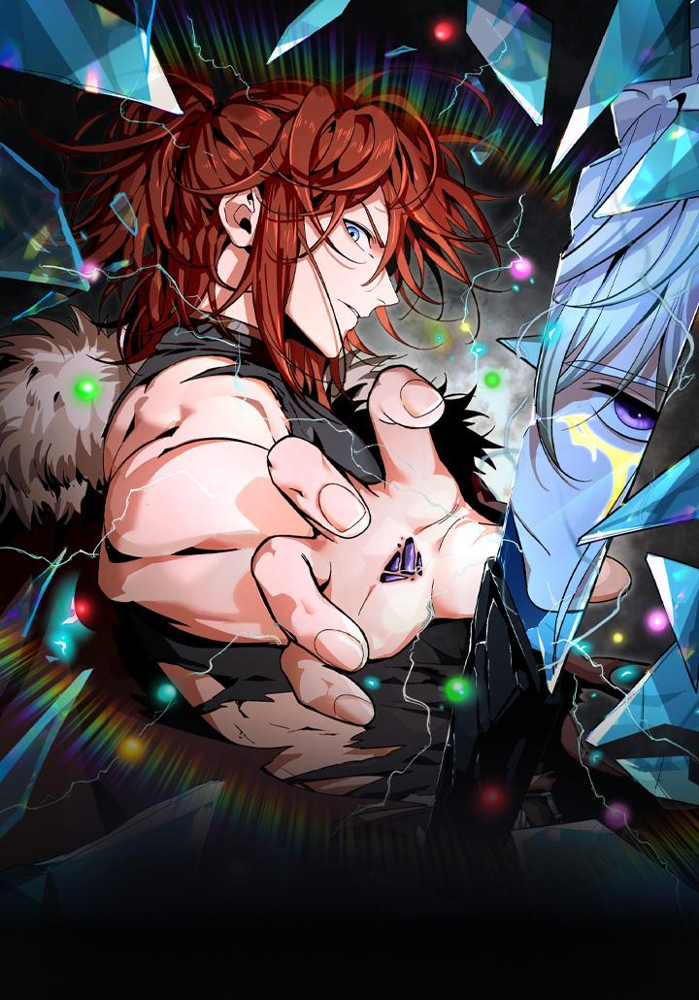
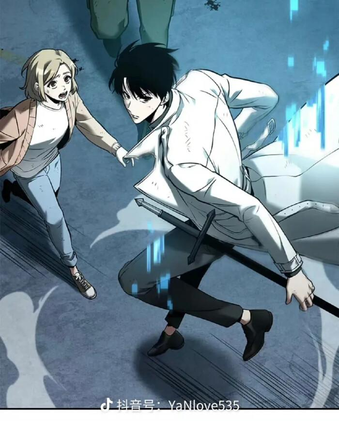
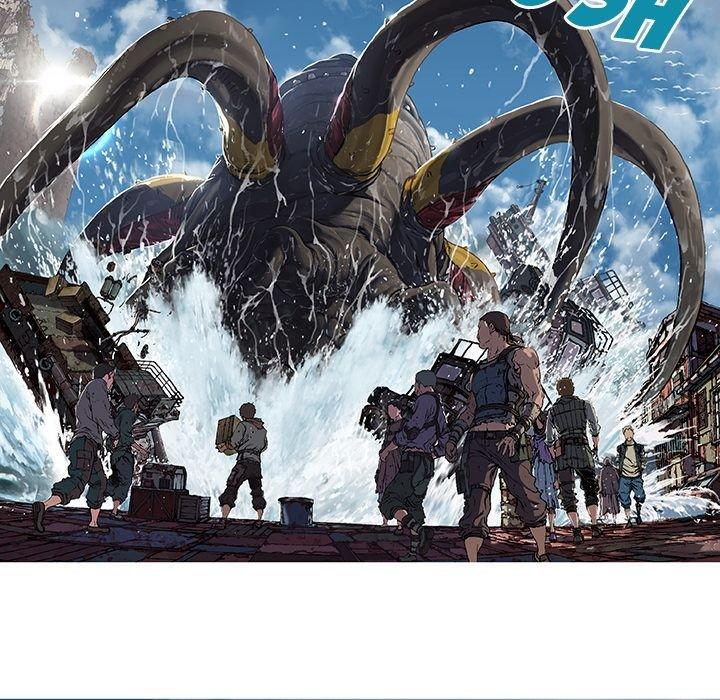
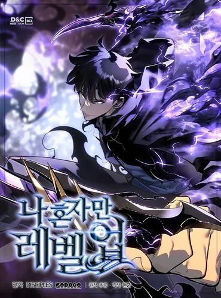
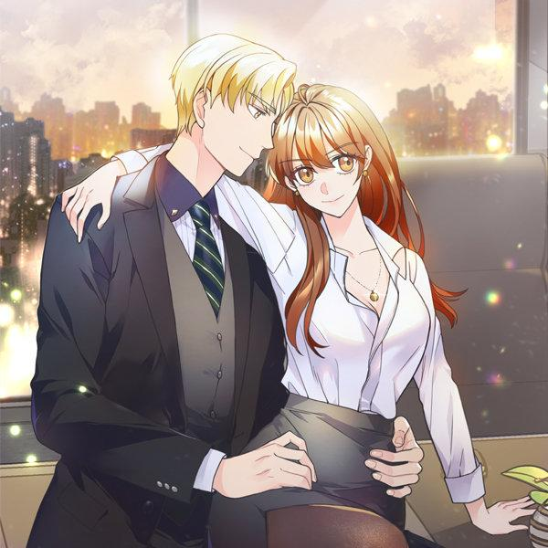
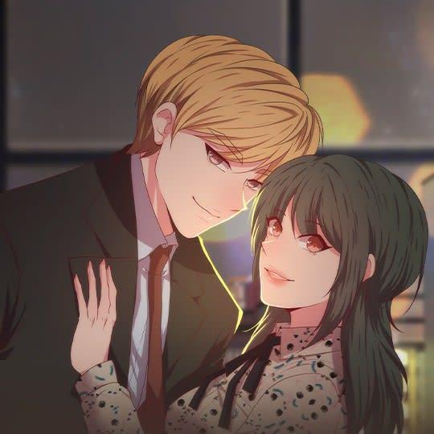
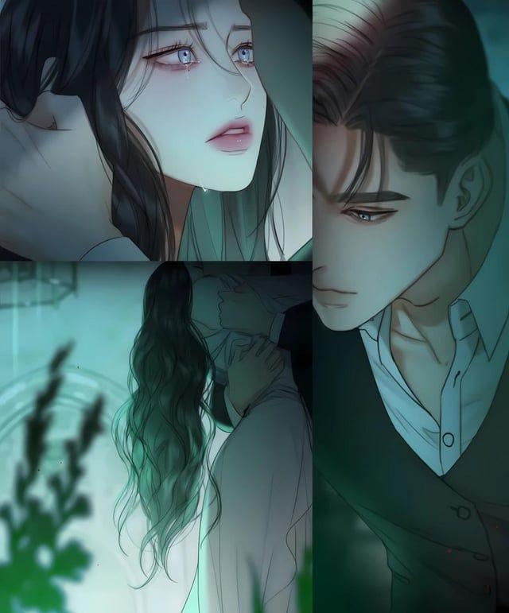
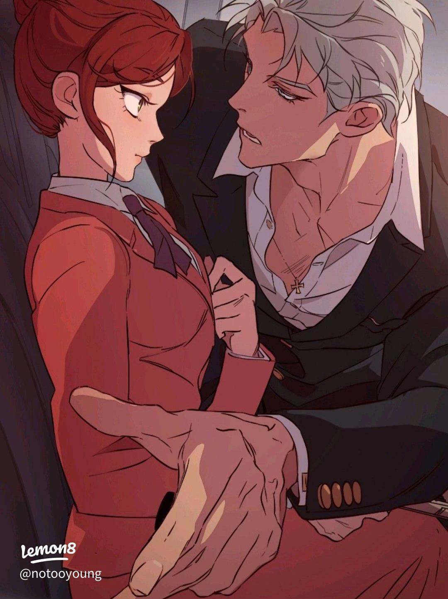

Seúl: donde la tecnología y los manhwas cobran vida.
En el corazón de Corea del Sur existe una ciudad donde el futuro ya es parte del presente. Entre luces, pantallas y calles llenas de energía, Seúl se convierte en el escenario perfecto para historias dignas de un manhwa.
💻 Tecnología en Seúl
-
Conectividad total
Internet de alta velocidad en casi todos los lugares, facilitando la comunicación en tiempo real.
-
Transporte inteligente
El metro cuenta con sistemas digitales, rutas optimizadas y pantallas informativas.
-
Ciudad digital
Aplicaciones móviles y tecnología integradas en la vida diaria.
-
Innovación constante
Seúl es una de las ciudades más avanzadas tecnológicamente del mundo.
📍 Lugares en Seúl
-
Hongdae
Zona juvenil llena de arte, música y creatividad.
-
Gangnam
Representa la parte moderna y tecnológica de la ciudad.
-
Myeongdong
Famosa por sus tiendas, comida y vida nocturna.
📚 Manhwas
Los manhwas son historias digitales originadas en Corea del Sur, diseñadas para leerse en formato vertical.
Gracias a la tecnología, este tipo de contenido se ha vuelto popular en todo el mundo.
Seúl es el escenario perfecto para muchas de estas historias por su ambiente moderno y urbano.
⚔️ Acción y fantasía
Solo Leveling, Lector Omnisciente, Leviatán
💖 Romance
Mi Secreto Más Íntimo, Volveré a Ti
🏗️ Isekai
El Mejor Desarrollador Inmobiliario








🌍 Ubicación
Seúl se encuentra en Corea del Sur, en el continente asiático. Es un centro global de tecnología, cultura y entretenimiento.